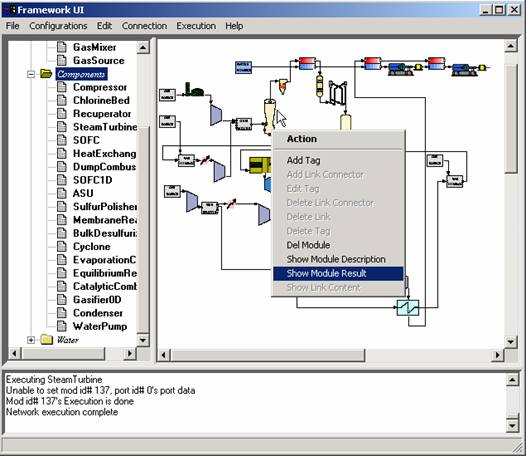
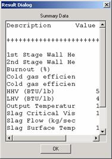
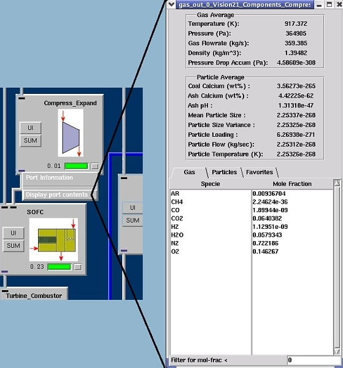
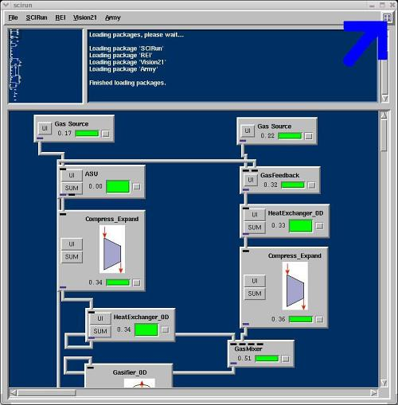
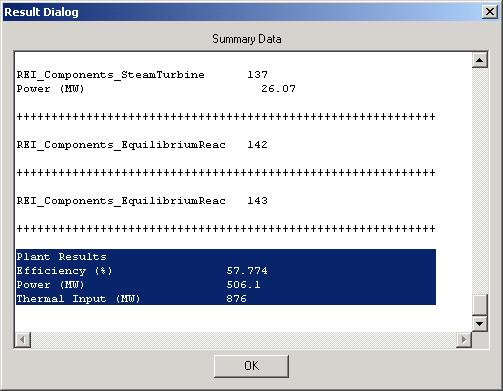

<html xmlns:v="urn:schemas-microsoft-com:vml"
xmlns:o="urn:schemas-microsoft-com:office:office"
xmlns:w="urn:schemas-microsoft-com:office:word"
xmlns="http://www.w3.org/TR/REC-html40">

<head>
<meta http-equiv=Content-Type content="text/html; charset=us-ascii">
<meta name=ProgId content=Word.Document>
<meta name=Generator content="Microsoft Word 10">
<meta name=Originator content="Microsoft Word 10">
<link rel=File-List href="view_files/filelist.xml">
<link rel=Edit-Time-Data href="view_files/editdata.mso">
<link rel=OLE-Object-Data href="view_files/oledata.mso">
<!--[if !mso]>
<style>
v\:* {behavior:url(#default#VML);}
o\:* {behavior:url(#default#VML);}
w\:* {behavior:url(#default#VML);}
.shape {behavior:url(#default#VML);}
</style>
<![endif]-->
<title>Advanced Power System Modeling Framework-Results</title>
<!--[if gte mso 9]><xml>
 <o:DocumentProperties>
  <o:Author>yang</o:Author>
  <o:LastAuthor>yang</o:LastAuthor>
  <o:Revision>10</o:Revision>
  <o:TotalTime>24</o:TotalTime>
  <o:Created>2004-12-10T20:23:00Z</o:Created>
  <o:LastSaved>2004-12-10T20:51:00Z</o:LastSaved>
  <o:Pages>1</o:Pages>
  <o:Words>215</o:Words>
  <o:Characters>1231</o:Characters>
  <o:Company>REI</o:Company>
  <o:Lines>10</o:Lines>
  <o:Paragraphs>2</o:Paragraphs>
  <o:CharactersWithSpaces>1444</o:CharactersWithSpaces>
  <o:Version>10.4219</o:Version>
 </o:DocumentProperties>
</xml><![endif]--><!--[if gte mso 9]><xml>
 <w:WordDocument>
  <w:SpellingState>Clean</w:SpellingState>
  <w:GrammarState>Clean</w:GrammarState>
  <w:Compatibility>
   <w:UseFELayout/>
  </w:Compatibility>
  <w:BrowserLevel>MicrosoftInternetExplorer4</w:BrowserLevel>
 </w:WordDocument>
</xml><![endif]-->
<style>
<!--
 /* Font Definitions */
 @font-face
	{font-family:SimSun;
	panose-1:2 1 6 0 3 1 1 1 1 1;
	mso-font-alt:\5B8B\4F53;
	mso-font-charset:134;
	mso-generic-font-family:auto;
	mso-font-pitch:variable;
	mso-font-signature:3 135135232 16 0 262145 0;}
@font-face
	{font-family:"\@SimSun";
	panose-1:2 1 6 0 3 1 1 1 1 1;
	mso-font-charset:134;
	mso-generic-font-family:auto;
	mso-font-pitch:variable;
	mso-font-signature:3 135135232 16 0 262145 0;}
 /* Style Definitions */
 p.MsoNormal, li.MsoNormal, div.MsoNormal
	{mso-style-parent:"";
	margin:0in;
	margin-bottom:.0001pt;
	mso-pagination:widow-orphan;
	font-size:12.0pt;
	font-family:"Times New Roman";
	mso-fareast-font-family:SimSun;}
h1
	{mso-margin-top-alt:auto;
	margin-right:0in;
	mso-margin-bottom-alt:auto;
	margin-left:0in;
	mso-pagination:widow-orphan;
	mso-outline-level:1;
	font-size:24.0pt;
	font-family:"Times New Roman";
	font-weight:bold;}
h2
	{mso-margin-top-alt:auto;
	margin-right:0in;
	mso-margin-bottom-alt:auto;
	margin-left:0in;
	mso-pagination:widow-orphan;
	mso-outline-level:2;
	font-size:18.0pt;
	font-family:"Times New Roman";
	font-weight:bold;}
h3
	{mso-margin-top-alt:auto;
	margin-right:0in;
	mso-margin-bottom-alt:auto;
	margin-left:0in;
	mso-pagination:widow-orphan;
	mso-outline-level:3;
	font-size:13.5pt;
	font-family:"Times New Roman";
	font-weight:bold;}
a:link, span.MsoHyperlink
	{color:blue;
	text-decoration:underline;
	text-underline:single;}
a:visited, span.MsoHyperlinkFollowed
	{color:blue;
	text-decoration:underline;
	text-underline:single;}
p
	{mso-margin-top-alt:auto;
	margin-right:0in;
	mso-margin-bottom-alt:auto;
	margin-left:0in;
	mso-pagination:widow-orphan;
	font-size:12.0pt;
	font-family:"Times New Roman";
	mso-fareast-font-family:SimSun;}
pre
	{margin:0in;
	margin-bottom:.0001pt;
	mso-pagination:widow-orphan;
	tab-stops:45.8pt 91.6pt 137.4pt 183.2pt 229.0pt 274.8pt 320.6pt 366.4pt 412.2pt 458.0pt 503.8pt 549.6pt 595.4pt 641.2pt 687.0pt 732.8pt;
	font-size:10.0pt;
	font-family:"Courier New";
	mso-fareast-font-family:SimSun;}
span.SpellE
	{mso-style-name:"";
	mso-spl-e:yes;}
@page Section1
	{size:8.5in 11.0in;
	margin:1.0in 1.25in 1.0in 1.25in;
	mso-header-margin:.5in;
	mso-footer-margin:.5in;
	mso-paper-source:0;}
div.Section1
	{page:Section1;}
-->
</style>
<!--[if gte mso 10]>
<style>
 /* Style Definitions */
 table.MsoNormalTable
	{mso-style-name:"Table Normal";
	mso-tstyle-rowband-size:0;
	mso-tstyle-colband-size:0;
	mso-style-noshow:yes;
	mso-style-parent:"";
	mso-padding-alt:0in 5.4pt 0in 5.4pt;
	mso-para-margin:0in;
	mso-para-margin-bottom:.0001pt;
	mso-pagination:widow-orphan;
	font-size:10.0pt;
	font-family:"Times New Roman";}
</style>
<![endif]--><!--[if gte mso 9]><xml>
 <o:shapedefaults v:ext="edit" spidmax="3074"/>
</xml><![endif]--><!--[if gte mso 9]><xml>
 <o:shapelayout v:ext="edit">
  <o:idmap v:ext="edit" data="1"/>
 </o:shapelayout></xml><![endif]-->
</head>

<body bgcolor="#92B5CE" lang=EN-US link=blue vlink=blue style='tab-interval:
.5in'>

<div class=Section1>

<div>

<div class=MsoNormal>

<hr size=4 width=100 style='width:75.0pt' align=left>

</div>

</div>

<div>

<div class=MsoNormal>

<hr size=4 width=200 style='width:150.0pt' align=left>

</div>

</div>

<div>

<div class=MsoNormal>

<hr size=4 width=300 style='width:225.0pt' align=left>

</div>

</div>

<h1>Viewing Results</h1>

<div>

<div class=MsoNormal>

<hr size=4 width=300 style='width:225.0pt' align=left>

</div>

</div>

<div>

<div class=MsoNormal>

<hr size=4 width=200 style='width:150.0pt' align=left>

</div>

</div>

<div>

<div class=MsoNormal>

<hr size=4 width=100 style='width:75.0pt' align=left>

</div>

</div>

<div>

<div class=MsoNormal>

<hr size=4 width="100%" align=left>

</div>

</div>

<table class=MsoNormalTable border=0 cellpadding=0 style='mso-cellspacing:1.5pt;
 mso-padding-alt:0in 5.4pt 0in 5.4pt'>
 <tr style='mso-yfti-irow:0;mso-yfti-lastrow:yes'>
  <td style='padding:.75pt .75pt .75pt .75pt'>
  <p class=MsoNormal><span style='mso-fareast-font-family:"Times New Roman"'><!--[if gte vml 1]><v:shapetype
   id="_x0000_t75" coordsize="21600,21600" o:spt="75" o:preferrelative="t"
   path="m@4@5l@4@11@9@11@9@5xe" filled="f" stroked="f">
   <v:stroke joinstyle="miter"/>
   <v:formulas>
    <v:f eqn="if lineDrawn pixelLineWidth 0"/>
    <v:f eqn="sum @0 1 0"/>
    <v:f eqn="sum 0 0 @1"/>
    <v:f eqn="prod @2 1 2"/>
    <v:f eqn="prod @3 21600 pixelWidth"/>
    <v:f eqn="prod @3 21600 pixelHeight"/>
    <v:f eqn="sum @0 0 1"/>
    <v:f eqn="prod @6 1 2"/>
    <v:f eqn="prod @7 21600 pixelWidth"/>
    <v:f eqn="sum @8 21600 0"/>
    <v:f eqn="prod @7 21600 pixelHeight"/>
    <v:f eqn="sum @10 21600 0"/>
   </v:formulas>
   <v:path o:extrusionok="f" gradientshapeok="t" o:connecttype="rect"/>
   <o:lock v:ext="edit" aspectratio="t"/>
  </v:shapetype><v:shape id="_x0000_i1032" type="#_x0000_t75" style='width:394.5pt;
   height:342pt' o:ole="">
   <v:imagedata src="view_files/image001.png" o:title=""/>
  </v:shape><![endif]--><![if !vml]><![endif]><!--[if gte mso 9]><xml>
   <o:OLEObject Type="Embed" ProgID="PBrush" ShapeID="_x0000_i1032"
    DrawAspect="Content" ObjectID="_1164191833">
   </o:OLEObject>
  </xml><![endif]--><o:p></o:p></span></p>
  </td>
  <td style='padding:.75pt .75pt .75pt .75pt'>
  <h3><!--[if gte vml 1]><v:shape id="_x0000_s1030" type="#_x0000_t75" style='position:absolute;
   margin-left:-.85pt;margin-top:-1.35pt;width:141.3pt;height:200.2pt;
   z-index:2;mso-position-horizontal-relative:text;
   mso-position-vertical-relative:line'>
   <v:imagedata src="view_files/image003.png" o:title=""/>
   <w:wrap side="left"/>
  </v:shape><![endif]--><![if !vml]><span style='mso-ignore:vglayout;
  position:relative;z-index:2'><span style='position:absolute;left:-1px;
  top:-2px;width:188px;height:267px'></span></span><![endif]><span
  style='font-size:18.0pt'><o:p></o:p></span></h3>
  <h3><span style='font-size:18.0pt'><o:p>&nbsp;</o:p></span></h3>
  <h3><span style='font-size:18.0pt'><o:p>&nbsp;</o:p></span></h3>
  <h3><span style='font-size:18.0pt'><o:p>&nbsp;</o:p></span></h3>
  <h3><span style='font-size:18.0pt'><o:p>&nbsp;</o:p></span></h3>
  <h3><span style='font-size:18.0pt'><o:p>&nbsp;</o:p></span></h3>
  <h3><span style='font-size:18.0pt'><o:p>&nbsp;</o:p></span></h3>
  <h3><span style='font-size:18.0pt'>Viewing Module Results <o:p></o:p></span></h3>
  <p>When the statement &#8220;Network execution complete&#8221; appears in the
  Error frame, the results of any module can be displayed. To view a
  module&#8217;s results, right click on the module and a menu of options will
  appear.<span style='mso-spacerun:yes'>&nbsp; </span>Select <i
  style='mso-bidi-font-style:normal'>Show Module Result</i> from the menu of
  options.<span style='mso-spacerun:yes'>&nbsp; </span>The Result Dialog window
  will then be displayed.<span style='mso-spacerun:yes'>&nbsp; </span><span
  style='mso-fareast-font-family:"Times New Roman"'><o:p></o:p></span></p>
  </td>
 </tr>
</table>

<div>

<div class=MsoNormal>

<hr size=4 width="100%" align=left>

</div>

</div>

<div>

<div class=MsoNormal>

<hr size=4 width="100%" align=left>

</div>

</div>

<table class=MsoNormalTable border=0 cellpadding=0 style='mso-cellspacing:1.5pt;
 mso-padding-alt:0in 5.4pt 0in 5.4pt'>
 <tr style='mso-yfti-irow:0;mso-yfti-lastrow:yes'>
  <td style='padding:.75pt .75pt .75pt .75pt'>
  <p class=MsoNormal><!--[if gte vml 1]><v:shape id="_x0000_s1027" type="#_x0000_t75"
   alt="" style='position:absolute;margin-left:0;margin-top:0;width:419.25pt;
   height:450pt;z-index:1;mso-wrap-distance-left:0;mso-wrap-distance-right:0;
   mso-position-horizontal:left;mso-position-vertical-relative:line'
   o:allowoverlap="f">
   <v:imagedata src="../modules/images/view1.jpg"/>
   <w:wrap type="square"/>
  </v:shape><![endif]--><![if !vml]><![endif]><a
  name=ports></a></p>
  </td>
  <td style='padding:.75pt .75pt .75pt .75pt'>
  <h2>Viewing Stream Properties </h2>
  <p>Data snapshots can be obtained by right-clicking on the stream ink. Select
  &quot;Show Link Content&quot; from the <em><b>Popup</b></em> menu to summon a
  screen that outlines fluid characteristics including temperature, pressure, <span
  class=SpellE>flowrate</span>, density, and composition. </p>
  <p>The data displayed represents instantaneous characteristics of the fluid
  at the specified port.</p>
  </td>
 </tr>
</table>

<div>

<div class=MsoNormal>

<hr size=4 width="100%" align=left>

</div>

</div>

<h2>Network Summary</h2>

<table class=MsoNormalTable border=0 cellpadding=0 style='mso-cellspacing:1.5pt;
 mso-padding-alt:0in 5.4pt 0in 5.4pt'>
 <tr style='mso-yfti-irow:0;mso-yfti-lastrow:yes'>
  <td style='padding:.75pt .75pt .75pt .75pt'>
  <p class=MsoNormal></p>
  <p>Selecting "View Results" from the Execution menuprovides an ordered table (shown above
  right) of each module's summaries. </p>
  </td>
  <td style='padding:.75pt .75pt .75pt .75pt'>
  <p class=MsoNormal></p>
  <p>A <em><b>System Performance Summary </b></em>is provided at the end of the
  <em>Network Summary</em> table and includes information about overall plant
  efficiency and net plant power.</p>
  </td>
 </tr>
</table>

<pre><o:p>&nbsp;</o:p></pre><pre><o:p>&nbsp;</o:p></pre><pre><o:p>&nbsp;</o:p></pre><pre><o:p>&nbsp;</o:p></pre><pre><o:p>&nbsp;</o:p></pre>

<h3><a href="../index.html">Return </a>to main index</h3>

<div>

<div class=MsoNormal>

<hr size=4 width="100%" align=left>

</div>

</div>

</div>

</body>

</html>
